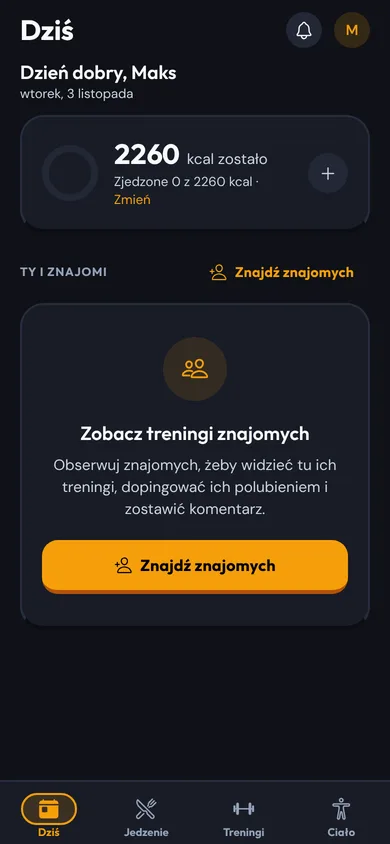
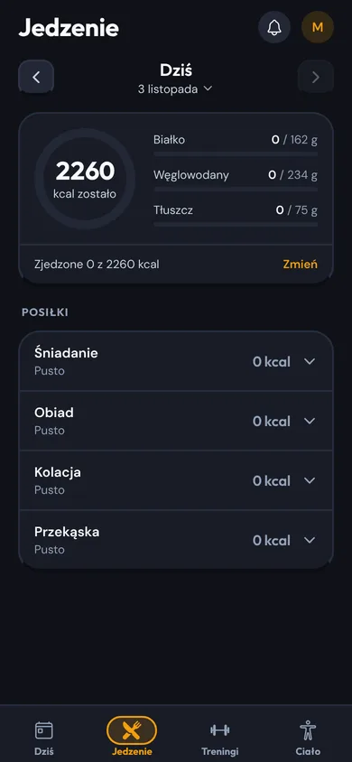
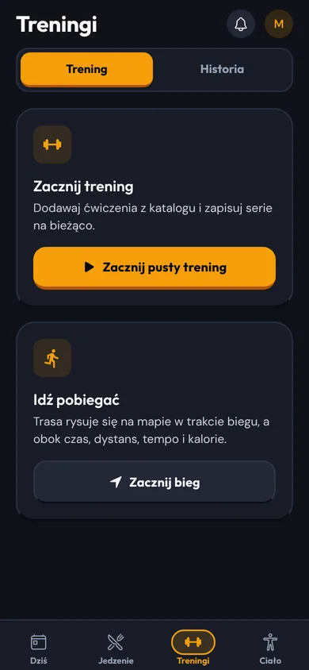
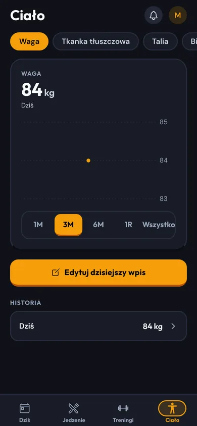

Pompa
● in active development · launching on the App Store and Google Play in December 2026An all-in-one app for people who train: log gym workouts set by set, record runs with GPS, count calories and macros, track body measurements, and follow friends to like and comment on their workouts. I am building it right now, end to end: mobile app, backend, infrastructure and tests.




UI in English and Polish (i18n). Screenshots from the Polish version.
What it does
- Gym workouts with sets, reps and weights; editing and history; personal records.
- Runs recorded with GPS in the background: live map, distance, pace, km splits; vehicle detection and auto-pause.
- Food log with search across ~3.4 million products from Open Food Facts, barcode scanning, daily calorie and macro goals worked out at onboarding.
- Body measurements with charts, metric and imperial units.
- Social feed: follow people, likes, comments with @mentions, workout photos, sharing to Instagram Stories, push notifications, report and block.
- iOS Live Activity: the workout in progress on the lock screen and Dynamic Island.
Stack
- Mobile: Expo SDK 58, React Native 0.88, React 19 with React Compiler, TypeScript (strict), Expo Router, Zustand, Axios, react-native-maps, i18next.
- Backend: Spring Boot 4.1, Java 21, MySQL with Flyway migrations, Meilisearch for food search, JWT with refresh tokens, email verification (Resend).
- Infrastructure: Railway, photos on Cloudflare R2, Sentry crash reports, Expo push, EAS builds and over-the-air updates.
- Quality: Testcontainers integration tests, Jest + React Native Testing Library, Maestro mobile E2E flows, Playwright E2E against production every 6 hours, GitHub Actions CI (lint, typecheck, tests, bundle).
Interesting problems
- Fast search over millions of products. Moved food search from SQL to a Meilisearch index and tuned it for a small server.
- Honest GPS data. Filtering imprecise fixes, GPS drift and car rides out of a run, with the same distance and calorie logic on the phone (live) and on the server (saved).
- Offline-safe workouts. The workout in progress survives app restarts and is written to storage on every change.
- Safety for a social app: reporting, blocking, moderation and filtering of offensive words, as App Store guidelines require.
The repositories are private until the launch. Happy to walk through the code in an interview.